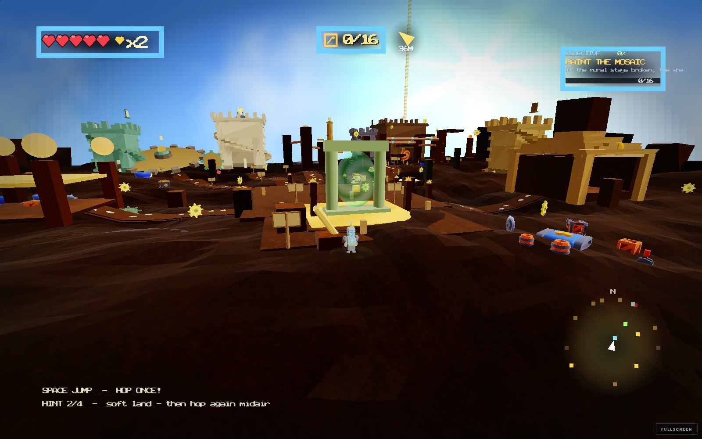
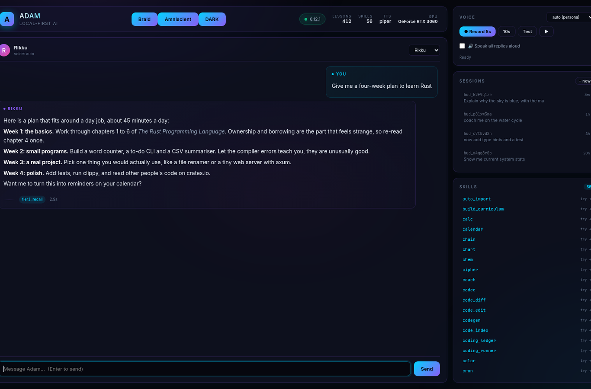
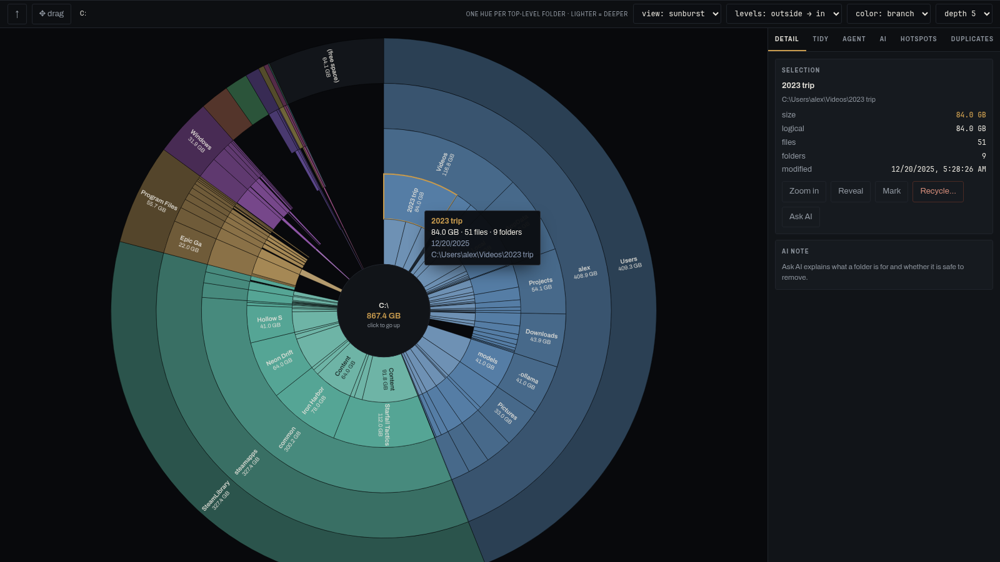
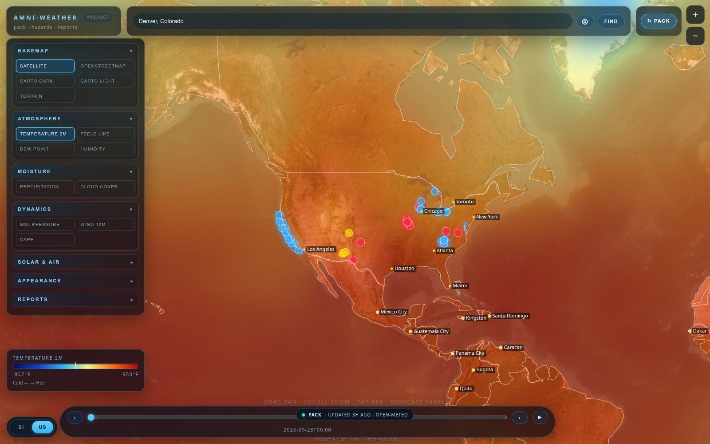
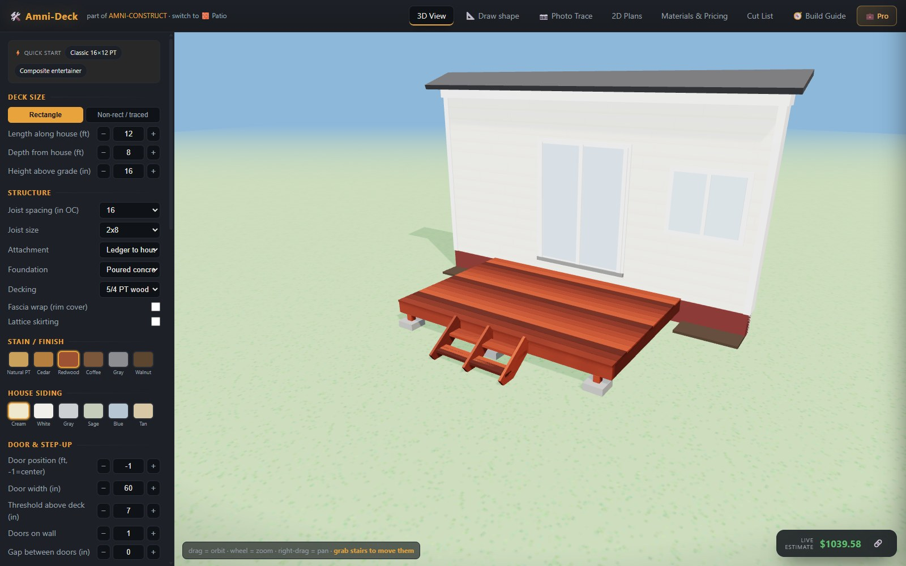
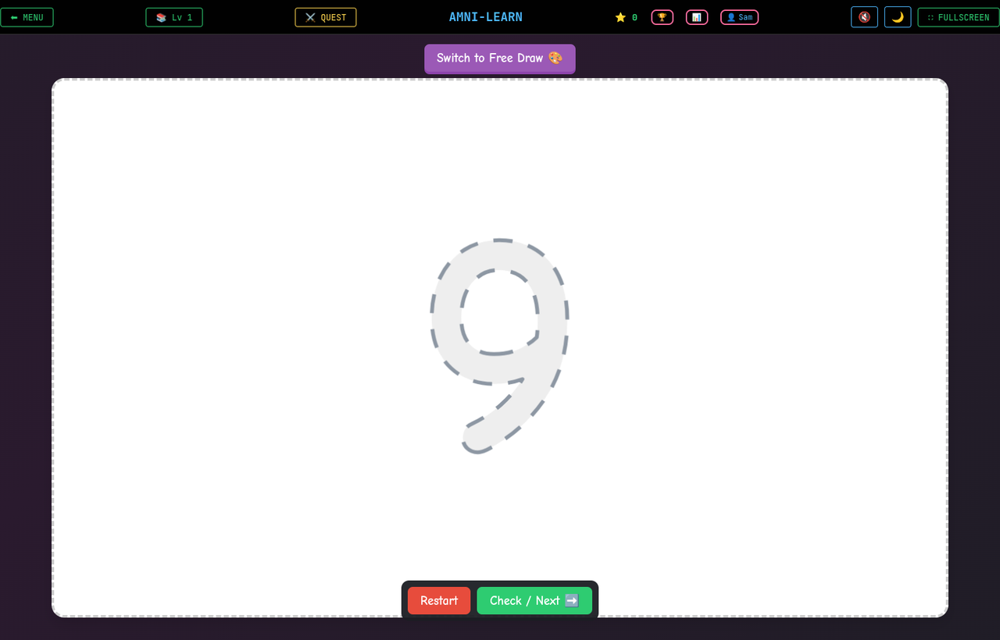
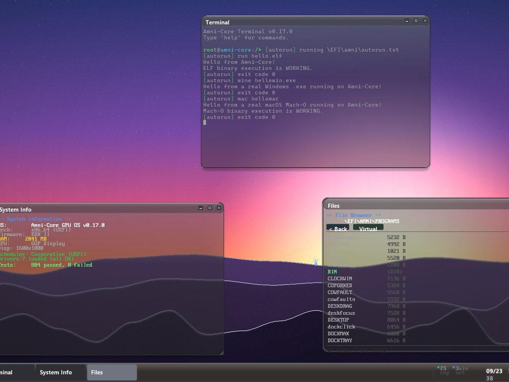

37 modules — free, no sign-up
Amni-Calc
Beam FEA, Mohr's circle, bolt preload, seal design, fatigue life, heat exchangers, NPSH. Every module ships the theory, a worked example and the standard it cites.
WASM solverCited standardsRuns offline

Amniscient, LLC — independent studio
Engineering tools, learning games and privacy-first software. Most of it runs in the tab you already have open. None of it watches you.
Windows · Linux · macOS — open beta
Every AI you already pay for, answering the same question at one table. Each seat reads the last one before it replies.
Plays in the browser
One brave mouse, eight realms, four tyrant bosses. The world, the music and the voices are all generated — the whole game is a 5 MB download.

37 modules — free, no sign-up
Beam FEA, Mohr's circle, bolt preload, seal design, fatigue life, heat exchangers, NPSH. Every module ships the theory, a worked example and the standard it cites.
Runs on your machine
A local assistant that stops being wrong. Correct it once and the correction sticks — no cloud round-trip, no transcript leaving the desk.

Windows · single exe · v1.5.0
See where your disk went. It reads the NTFS file table instead of walking folders, so a 930 GB drive draws in about twenty seconds — then an AI seat proposes a cleanup you approve line by line.

Windows · one-click install · v0.12.1
A real Servo browser, not a Chromium skin. One exe, auto-updates from this site, and it fills logins from your vault — Amni, Bitwarden, 1Password, or KeePassXC.

Open source
A live phone cockpit for Grok Build. Pair with one QR, watch thinking and tool calls stream in real time, and keep the link through Wi-Fi drops and agent restarts.
Live models — no account
Temperature, wind, precipitation, CAPE, UV and pressure as layers you can scrub through time. Drop a pin for the hourly, the 7-day, the surf and the air.

80,000 particles, in a tab
A galaxy you can fly through, built on real NASA exoplanet data — then an idle empire layer on top of it, because someone has to run the trade routes.

Decks · patios · pools · framing
Trace your actual yard from a photo, set the scale with two clicks, and build it on screen. Printable construction plans and a priced cut list come out the other end.

Pre-K through college prep
Sixty-plus games and guides — tracing, phonics, math, typing, STEM labs, and brain training for the adults in the room. It collects nothing and works with the wifi off.

Built from zero — no Linux, no NT
An operating system with its own kernel that runs real Windows, Linux and macOS binaries natively. No VM underneath it, and a septidecimal core doing the arithmetic.

Nine more products, and the references people land on most.
The references that get used the most.
One engineer, no funding, and a rule about what leaves your machine.
Every product says exactly what data it touches, in its own privacy policy rather than one blanket page. The browser has no telemetry, the learning games collect nothing, and the AI assistant runs on your own GPU. Where something does need a server — messaging, licence checks — it is a server you can run yourself.
GPU compute, vectorised kernels and parallel pipelines wherever the work deserves them: Vulkan, ROCm and Taichi on the desktop, WebGPU and WASM in the browser. A galaxy of 80,000 particles and a finite-element beam solver both belong in a tab, and both run there.
These are working tools, so the calculators cite the standard they follow and ship a worked example you can check by hand. The architecture is documented, the changes are logged, and anything that claims a number can show where the number came from.